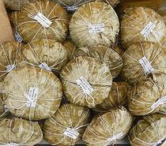

A. macrorrhizos is not actually a Taro, but closely related (Alocasia means "Like Taro). This plant is native to the rainforests of Island Southeast Asia, and as far south as Queensland, Australia. It was originally cultivated in the Philippines, and spread from there through the Pacific Islands. Some islanders considered it "famine food", and much preferred Taro. The leaves can get up to 6 feet long and over 3 feet wide.
A video from the Philippines shows a man uprooting a wild plant and discarding the whole thing. The root was very short. He then started digging out small Cormels from around where the root had been to actually cook and eat. He did complain about them being so small (about 5 x 1-1/4 inches).
The leaf stems (petioles) of this plant are apparently used in some regions, just sliced up, boiled, and included in curries. Usability of leaf stems may depend on particular cultivars.
Nothing I have seen in photos, videos, or descriptions suggests the "Big Taro" corms common in the Philippine and Southeast Asian markets here in Los Angeles come from this plant. Photo by Tau'olunga distributed under license Creative Commons Attribution-ShareAlike v2.5 Generic.
More on Arums.

In the Philippines, a sweet called Binagol is traditionally made from the
Giant Taro, though most recipes I see for it call for regular Taro. This
confection is made with condensed milk, sugar, coconut milk, and egg yolks.
It is placed in a half coconut shell, wrapped in banana leaves, and steamed
for 30 minutes or more.
Photo by Judgefloro contributed to the Public Domain.